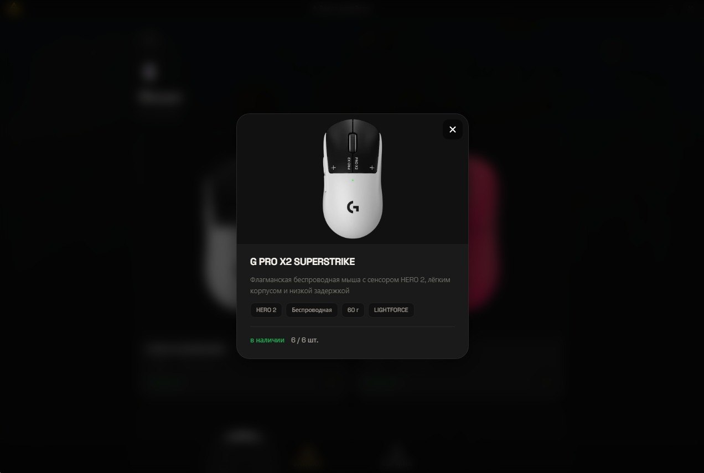
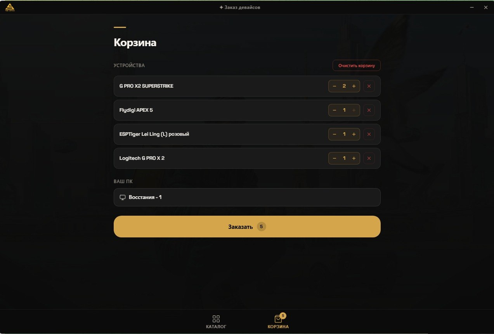

[ Интерфейс · экраны 02–04 ]
Путь заявки — от корзины до подтверждения
Три экрана, которые проходит гость.
Экран 02
Корзина с выбранными устройствами
assets/device-rental/02-cart.jpg

Экран 03
Карточка устройства с характеристиками
assets/device-rental/03-device.jpg

Экран 04
Подтверждение заявки с номером ПК
assets/device-rental/04-confirm.jpg
